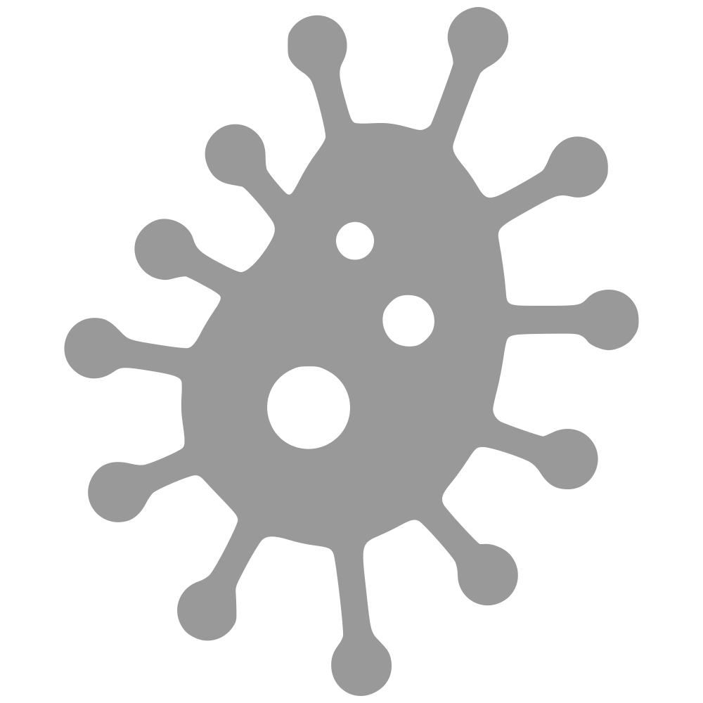

<ion-split-pane when="lg">
  <ion-menu class="navMenu" [content]="content" *ngIf="session.loggedIn">
    <ion-header>
      <ion-toolbar>
        <ion-title id="user-info">
          <div *ngIf="session.loggedIn">
            <span *ngIf="session.user" class="truncate">
              <ion-icon name="contact"></ion-icon>
              {{session.user.email}}
            </span>
            <ion-icon name="arrow-dropdown" icon-only (click)="presentUserPopover($event)">
            </ion-icon>
          </div>
        </ion-title>
      </ion-toolbar>
    </ion-header>

    <ion-content>
      <ion-list id="regularFuncions">
        <button menuClose ion-item *ngFor="let p of regularFuncions" (click)="openPage(p)">
          <span class="flex-container">
            
            
            <ion-icon class="flex-left" *ngIf="p.title == 'Calculator'" name="calculator"></ion-icon>
            <ion-icon class="flex-left" *ngIf="p.title == 'Guidelines'" name="document"></ion-icon>
            <span class="flex-right">{{p.title}}</span>
          </span>
        </button>
      </ion-list>

      <ion-list id="adminFunctions" *ngIf="session.isSuperadmin">
        <h6 class="sectionHeader">Admin Tools</h6>
        <button menuClose ion-item *ngFor="let p of adminFunctions" (click)="openPage(p)">
          <span class="flex-container">
            <ion-icon class="flex-left" *ngIf="p.title == 'User Management'" name="people"></ion-icon>
            <ion-icon class="flex-left" id="hospitalIcon" *ngIf="p.title == 'Hospital Management'" name="add"></ion-icon>

            <span class="flex-right">{{p.title}}</span>
          </span>
        </button>
      </ion-list>

      <ion-list id="settings">
        <button menuClose ion-item *ngFor="let p of settings" (click)="openPage(p)">
          <span class="flex-container">
            <ion-icon class="flex-left" *ngIf="p.title == 'Settings'" name="settings"></ion-icon>

            <span class="flex-right">{{p.title}}</span>
          </span>
        </button>
      </ion-list>


    </ion-content>
    <ion-footer>
      <ion-toolbar>
        <ion-buttons>
          <button ion-button clear (click)="showAbout()">
            About
          </button>
          <button ion-button clear *ngIf="session.isSuperadmin" (click)="showAdminGuide()">
            Admin Guide
          </button>
          <button ion-button clear (click)="showUserGuide()">
            User Guide
          </button>
        </ion-buttons>
      </ion-toolbar>
    </ion-footer>
  </ion-menu>

  <!-- Disable swipe-to-go-back because it's poor UX to combine STGB with side menus -->
  <ion-nav [root]="rootPage" #content swipeBackEnabled="false" main></ion-nav>
</ion-split-pane>
